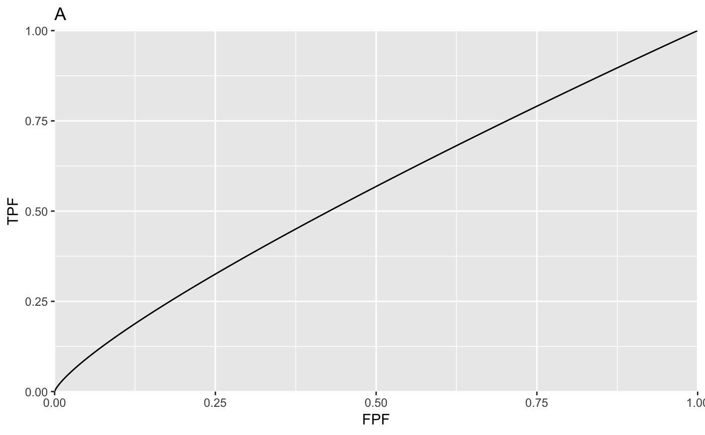
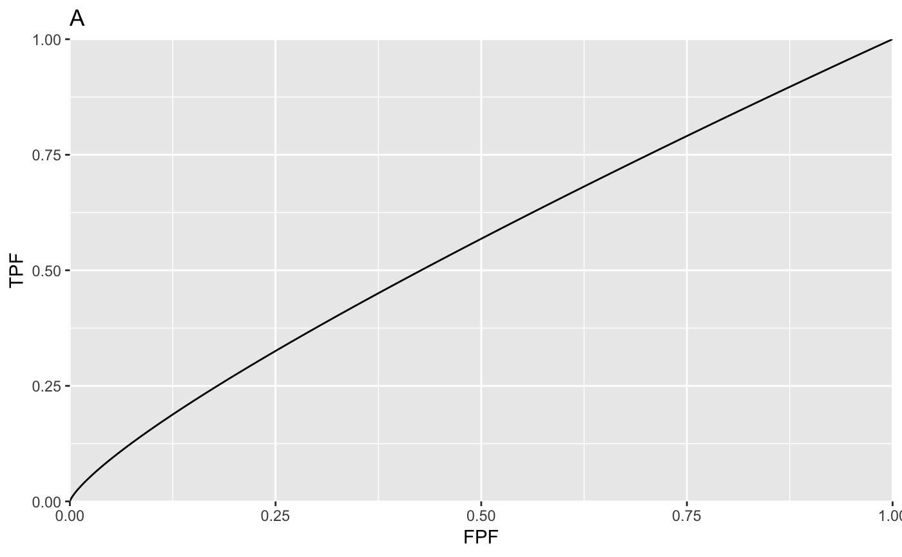

Main code and output
#> Fig. A : mu = 1 , alpha = 0.2
#> Fig. B : mu = 3 , alpha = 0.2
#> Fig. C : mu = 1 , alpha = 0.8
#> Fig. D : mu = 3 , alpha = 0.8


cbmPlots.Rmd#> Fig. A : mu = 1 , alpha = 0.2
#> Fig. B : mu = 3 , alpha = 0.2
#> Fig. C : mu = 1 , alpha = 0.8
#> Fig. D : mu = 3 , alpha = 0.8
#> Fig. E : mu = 1 , alpha = 0.2
#> Fig. F : mu = 3 , alpha = 0.2
#> Fig. G : mu = 1 , alpha = 0.8
#> Fig. H : mu = 3 , alpha = 0.8


The dark line is the diseased distribution. The grey line is the non-diseased distribution. The bimodal diseased distribution is clearly evident in plots F and H.


Comments
Plots A - D show ROC curves predicted by the CBM model; the corresponding values of the \(mu\) and \(alpha\) parameters are indicated above the plots. For small \(mu\) and/or \(alpha\) the curve approaches the chance diagonal, consistent with the notion that if the lesion is not visible, performance can be no better than chance level.